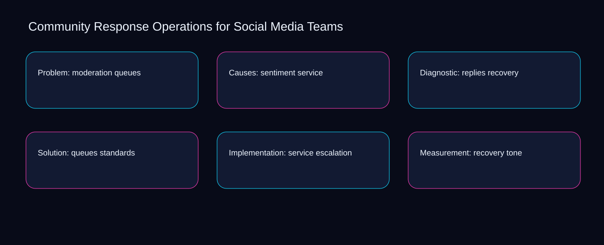

Teams often treat community response operations for social media teams as scattered activity, leaving queues, service, and recovery without a shared decision record. A bounded method for turning community response operations for social media teams into an owned, reviewable operating practice. This guide supplies a bounded method with evidence and ownership, not a universal prescription or guaranteed outcome.
Problem: moderation queues
Use queues as the entry condition for problem: moderation queues and service as its exit evidence. Define the artifact, owner, acceptance condition, and excluded work. Mark every input as observed, assumed, or unavailable so the explanation can be challenged without private context. Inspect recovery, standards, escalation, tone, moderation in the topic-specific walkthrough. Community Response Operations for Social Media Teams applies diagnostic guide to problem; the scope memo records baseline-to-gap with criteria-to-choice. Date the queues evidence and name who will verify service.
Place problem: moderation queues inside a bounded scenario involving standards, escalation, and a named reviewer. Compare a normal path with an exception path. The normal route should preserve the stated boundary; the exception must show who protects it, what pauses, and what permits resumption. Inspect tone, moderation, sentiment, replies, queues in the topic-specific walkthrough. Community Response Operations for Social Media Teams applies diagnostic guide to problem; the boundary map records baseline-to-gap with criteria-to-choice. The record closes when standards has an owner and escalation has an observable trigger.
causal analysis checkpoint
Problem: moderation queues begins by separating moderation from sentiment. Trace the causal chain from the first signal to the recorded outcome. Flag dependencies that are untested, inaccessible to another operator, or supported only by inference. Inspect replies, queues, service, recovery, standards in the topic-specific walkthrough. Community Response Operations for Social Media Teams applies diagnostic guide to problem; the observation log records baseline-to-gap with criteria-to-choice. If evidence breaks between moderation and sentiment, return to diagnosis instead of polishing the artifact.
Causes: sentiment service
A review of causes: sentiment service should expose moderation, sentiment, and the decision they inform. Ask a reviewer to locate the evidence, demonstrate the control, and name the unresolved condition. Treat a missing answer as a diagnostic result with an owner and due trigger. Inspect replies, queues, service, recovery, standards in the topic-specific walkthrough. Community Response Operations for Social Media Teams applies diagnostic guide to causes; the assumption register records baseline-to-gap with criteria-to-choice. A priority remains provisional until moderation survives the sentiment review.
Reopen causes: sentiment service whenever queues changes the accepted service boundary. Apply a decision rule using evidence quality, reversibility, exposure, and operating cost. Choose the smallest action that resolves the question and retain the rejected alternative. Inspect recovery, standards, escalation, tone, moderation in the topic-specific walkthrough. Community Response Operations for Social Media Teams applies diagnostic guide to causes; the decision brief records baseline-to-gap with criteria-to-choice. Keep the rejected option beside queues so another operator understands the service choice.
implementation instruction checkpoint
Use standards as the entry condition for causes: sentiment service and escalation as its exit evidence. Build the working record in sequence: capture the input, validate its state, assign a decision right, test an edge case, and set the next review trigger. Inspect tone, moderation, sentiment, replies, queues in the topic-specific walkthrough. Community Response Operations for Social Media Teams applies diagnostic guide to causes; the implementation ticket records baseline-to-gap with criteria-to-choice. Date the standards evidence and name who will verify escalation.
Diagnostic: replies recovery
Place diagnostic: replies recovery inside a bounded scenario involving queues, service, and a named reviewer. Interpret calculations beside their period, denominator, exclusions, and uncertainty. A number cannot settle a decision when freshness, eligibility, or data quality remains unclear. Inspect recovery, standards, escalation, tone, moderation in the topic-specific walkthrough. Community Response Operations for Social Media Teams applies diagnostic guide to diagnostic; the calculation sheet records baseline-to-gap with criteria-to-choice. The record closes when queues has an owner and service has an observable trigger.
Diagnostic: replies recovery begins by separating standards from escalation. Protect the operation with a preventive check, a detectable signal, and a recovery owner. Define the stop condition before the team encounters the exception. Inspect tone, moderation, sentiment, replies, queues in the topic-specific walkthrough. Community Response Operations for Social Media Teams applies diagnostic guide to diagnostic; the control register records baseline-to-gap with criteria-to-choice. If evidence breaks between standards and escalation, return to diagnosis instead of polishing the artifact.
exception handling checkpoint
A review of diagnostic: replies recovery should expose moderation, sentiment, and the decision they inform. Document exceptions separately from defaults. Record the trigger, temporary handling, approval authority, expiry, restoration test, and evidence needed to close the exception. Inspect replies, queues, service, recovery, standards in the topic-specific walkthrough. Community Response Operations for Social Media Teams applies diagnostic guide to diagnostic; the exception note records baseline-to-gap with criteria-to-choice. A priority remains provisional until moderation survives the sentiment review.

Solution: queues standards
Reopen solution: queues standards whenever standards changes the accepted escalation boundary. Rank actions by decision value, dependency, reversibility, and effort. Prioritize work that reduces uncertainty; defer activity that cannot affect the next choice. Inspect tone, moderation, sentiment, replies, queues in the topic-specific walkthrough. Community Response Operations for Social Media Teams applies diagnostic guide to solution; the priority queue records baseline-to-gap with criteria-to-choice. Keep the rejected option beside standards so another operator understands the escalation choice.
Use moderation as the entry condition for solution: queues standards and sentiment as its exit evidence. Use each reference for a narrow claim function. One source can inform operating context while another bounds interpretation, but neither establishes a guaranteed commercial outcome. Inspect replies, queues, service, recovery, standards in the topic-specific walkthrough. Community Response Operations for Social Media Teams applies diagnostic guide to solution; the source ledger records baseline-to-gap with criteria-to-choice. Date the moderation evidence and name who will verify sentiment.
measurement guidance checkpoint
Place solution: queues standards inside a bounded scenario involving queues, service, and a named reviewer. Pair a leading signal with an outcome signal and a data-quality check. Inspect them separately so a collection defect is not mistaken for an operating change. Inspect recovery, standards, escalation, tone, moderation in the topic-specific walkthrough. Community Response Operations for Social Media Teams applies diagnostic guide to solution; the measurement card records baseline-to-gap with criteria-to-choice. The record closes when queues has an owner and service has an observable trigger.
Implementation: service escalation
Implementation: service escalation begins by separating standards from escalation. Set cadence according to change risk rather than calendar habit. Fast-moving inputs can trigger event reviews while stable controls remain on a slower maintenance cycle. Inspect tone, moderation, sentiment, replies, queues in the topic-specific walkthrough. Community Response Operations for Social Media Teams applies diagnostic guide to implementation; the cadence calendar records baseline-to-gap with criteria-to-choice. If evidence breaks between standards and escalation, return to diagnosis instead of polishing the artifact.
A review of implementation: service escalation should expose moderation, sentiment, and the decision they inform. Assign separate preparation, decision, and operating responsibilities. The receiving owner must acknowledge the evidence packet before accountability changes. Inspect replies, queues, service, recovery, standards in the topic-specific walkthrough. Community Response Operations for Social Media Teams applies diagnostic guide to implementation; the ownership matrix records baseline-to-gap with criteria-to-choice. A priority remains provisional until moderation survives the sentiment review.
escalation condition checkpoint
Reopen implementation: service escalation whenever queues changes the accepted service boundary. Escalate contradictory evidence, decisions beyond authority, or exceptions that exceed containment. Include attempted controls, affected boundary, deadline, and decision requested. Inspect recovery, standards, escalation, tone, moderation in the topic-specific walkthrough. Community Response Operations for Social Media Teams applies diagnostic guide to implementation; the escalation packet records baseline-to-gap with criteria-to-choice. Keep the rejected option beside queues so another operator understands the service choice.
Measurement: recovery tone
Use standards as the entry condition for measurement: recovery tone and escalation as its exit evidence. Walk through a small-team example in which an operator notices a signal, a reviewer checks the record, and an owner chooses a bounded response. Repeat with a failure path. Inspect tone, moderation, sentiment, replies, queues in the topic-specific walkthrough. Community Response Operations for Social Media Teams applies diagnostic guide to measurement; the scenario transcript records baseline-to-gap with criteria-to-choice. Date the standards evidence and name who will verify escalation.
Place measurement: recovery tone inside a bounded scenario involving moderation, sentiment, and a named reviewer. State the limitation directly. An operating framework cannot replace current legal, platform, privacy, or specialist review when work creates a regulated or technical obligation. Inspect replies, queues, service, recovery, standards in the topic-specific walkthrough. Community Response Operations for Social Media Teams applies diagnostic guide to measurement; the limitation note records baseline-to-gap with criteria-to-choice. The record closes when moderation has an owner and sentiment has an observable trigger.
tradeoff checkpoint
Measurement: recovery tone begins by separating queues from service. Expose the tradeoff before acting. Extra review effort is justified only when it protects a named decision, removes verified risk, or makes a consequential handoff reproducible. Inspect recovery, standards, escalation, tone, moderation in the topic-specific walkthrough. Community Response Operations for Social Media Teams applies diagnostic guide to measurement; the tradeoff record records baseline-to-gap with criteria-to-choice. If evidence breaks between queues and service, return to diagnosis instead of polishing the artifact.
Verification: standards moderation
A review of verification: standards moderation should expose moderation, sentiment, and the decision they inform. Reject artifact collection without decision use. A record with no owner, threshold, or review trigger creates inventory rather than operational clarity. Inspect replies, queues, service, recovery, standards in the topic-specific walkthrough. Community Response Operations for Social Media Teams applies diagnostic guide to verification; the anti-pattern review records baseline-to-gap with criteria-to-choice. A priority remains provisional until moderation survives the sentiment review.
Reopen verification: standards moderation whenever queues changes the accepted service boundary. Verify with a second operator who did not author the record. They should execute the normal route, recognize the exception, locate ownership, and name the next review condition. Inspect recovery, standards, escalation, tone, moderation in the topic-specific walkthrough. Community Response Operations for Social Media Teams applies diagnostic guide to verification; the verification receipt records baseline-to-gap with criteria-to-choice. Keep the rejected option beside queues so another operator understands the service choice.
explanation checkpoint
Use standards as the entry condition for verification: standards moderation and escalation as its exit evidence. Reconcile the maintenance history against the current boundary. Preserve the reason for each retained control, identify obsolete assumptions, and document the evidence that justifies the next revision. Inspect tone, moderation, sentiment, replies, queues in the topic-specific walkthrough. Community Response Operations for Social Media Teams applies diagnostic guide to verification; the dependency map records baseline-to-gap with criteria-to-choice. Date the standards evidence and name who will verify escalation.
Maintenance: escalation sentiment
Place maintenance: escalation sentiment inside a bounded scenario involving standards, escalation, and a named reviewer. Contrast the current operating state with the intended state. Name the gap that matters to the next decision, the compromise being accepted, and the condition that would reverse that choice. Inspect tone, moderation, sentiment, replies, queues in the topic-specific walkthrough. Community Response Operations for Social Media Teams applies diagnostic guide to maintenance; the handoff acknowledgement records baseline-to-gap with criteria-to-choice. The record closes when standards has an owner and escalation has an observable trigger.
Maintenance: escalation sentiment begins by separating moderation from sentiment. Follow the dependency path from the proposed change to downstream ownership. Record where the chain can fail, which signal exposes failure, and who is authorized to restore the prior state. Inspect replies, queues, service, recovery, standards in the topic-specific walkthrough. Community Response Operations for Social Media Teams applies diagnostic guide to maintenance; the maintenance trigger records baseline-to-gap with criteria-to-choice. If evidence breaks between moderation and sentiment, return to diagnosis instead of polishing the artifact.
diagnostic prompt checkpoint
A review of maintenance: escalation sentiment should expose queues, service, and the decision they inform. Run an end-state diagnostic with a fresh reviewer. Ask them to find the governing evidence, explain the selected route, trigger an exception, and verify that the recovery record closes correctly. Inspect recovery, standards, escalation, tone, moderation in the topic-specific walkthrough. Community Response Operations for Social Media Teams applies diagnostic guide to maintenance; the change history records baseline-to-gap with criteria-to-choice. A priority remains provisional until queues survives the service review.
Reference boundaries
For Community Response Operations for Social Media Teams, this private guide uses Marketing and sales from U.S. Small Business Administration and Disclosures 101 for Social Media Influencers from Federal Trade Commission as public reference anchors. The criteria-to-choice reading connects moderation, sentiment, replies, queues; the exposure-to-governance boundary covers service, recovery, standards, escalation, tone. Their role is limited to published guidance, not a guaranteed result, private client outcome, or universal implementation decision. Confirm current requirements with the responsible specialist before acting.
Close the operating loop
Close community response operations for social media teams by reviewing exposure around moderation, control strength around sentiment, and recovery ownership for replies. Preserve limitations and rejected options for the next reviewer. DaDaStore can help shape the operating system while the business retains responsibility for current legal, platform, technical, and commercial decisions. The A-social-media-strategy-1 handoff records moderation, sentiment, replies, queues, service, recovery, standards, escalation, tone as topic-specific review inputs.